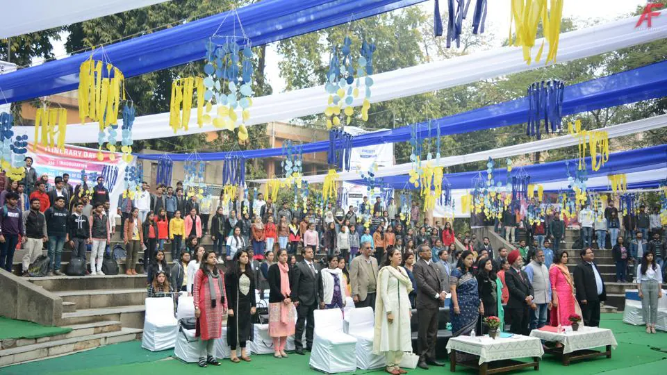

About Us

Dyal Singh College owes its origin to the extreme generosity and foresight of Sardar Dyal Singh
Majithia, founder of ‘The Tribune’, Punjab University and ‘Punjab National Bank’, who willed his vast
wealth in 1895 for the setting up of an Education Trust for a truly secular college. Consequently, Dyal
Singh College was established at Lahore in 1910. After the Partition of India, Dyal Singh College was
established in Karnal and in 1952 at Delhi. It started functioning in the capital at Rouse Avenue as a
constituent College of the University of Delhi w.e.f 05.08.1959 and at present location since
16.10.1962. During 1963-1967, it functioned in 2 units from 8.30 am to 4.30 pm. The University of
Delhi took it over as a University Maintained institution in 1978.
NIRF (HRD) 2017 – 8th Rank (All India) NIRF (HRD) 2018 – 25th Rank (All India)
NIRF (HRD) 2019 – 20th Rank (All India) NIRF (HRD) 2020 – 21st Rank (All India)
The college has been accredited-NAAC (UGC) Grade “A”